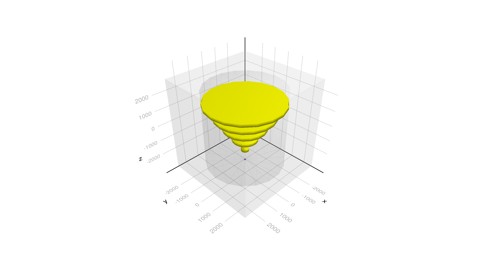
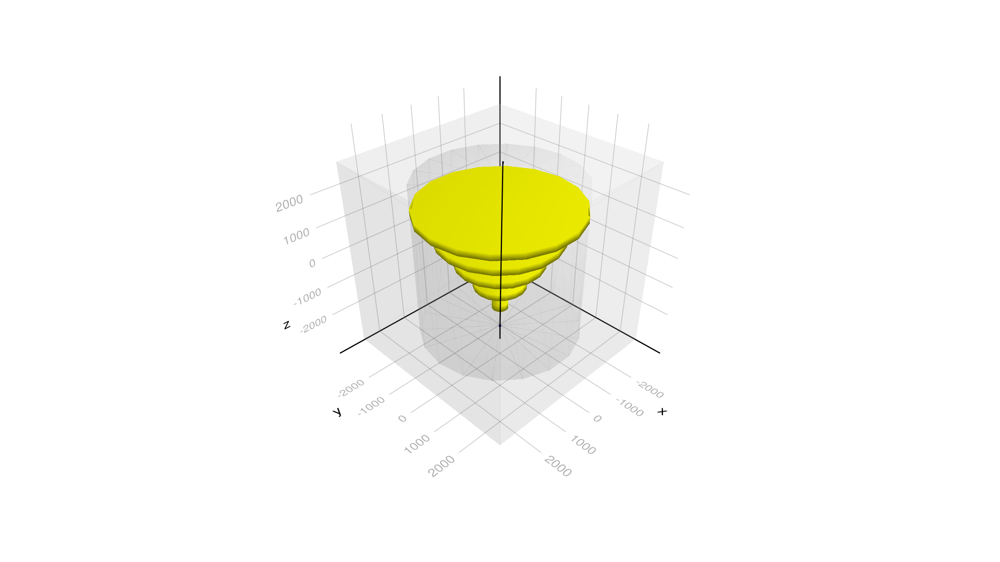
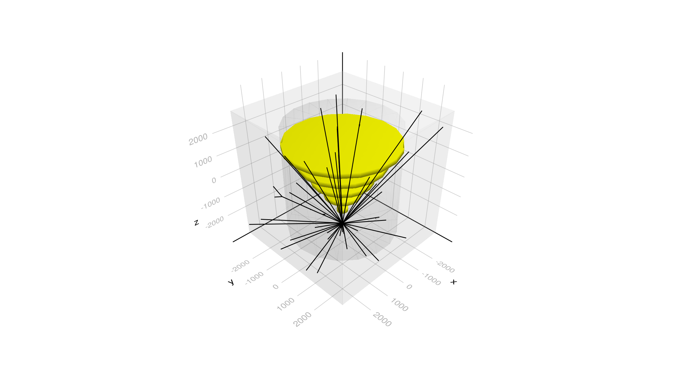

Basic/B2a Event Display Example
In this example is based on the Geant4 basic/B2 example of the Geant4 distribution. It is a simple example that shows how to interact with the Geant4 classes.
You can also download this example as a Jupyter notebook and a plain Julia source file.
Table of contents
- Loading the necessary Julia modules
- Define Detector Parameters structure
- Particle Gun initialization
- Event Display
- Create the application
- Configure, Initialize and Run
Loading the necessary Julia modules
Load the Geant4 and Geant4.SystemOfUnits modules. In order to trigger the load of the G4Vis extension we need to load the following modules: GLMakie, Rotations, LinearAlgebra, IGLWrap_jll
using Geant4
using Geant4.SystemOfUnits
using CairoMakie, Rotations, LinearAlgebra, IGLWrap_jll # to force loading G4Vis extension
import DisplayAs: PNGDefine Detector Parameters structure
The B2aDetector structure is defined with the default detector parameters. We include the B2aDetector.jl file not to clutter the example.
include(joinpath(@__DIR__, "B2aDetector.jl"))Particle Gun initialization
particlegun = G4JLGunGenerator(particle = "proton",
energy = 3GeV,
direction = G4ThreeVector(0,0,1),
position = G4ThreeVector(0,0,-2940.0));Event Display
To setup the event display we need to create an instance of the G4JLEventDisplay type. The file B2aVisSettings.jl contains the settings for the visualization.
evtdisplay = G4JLEventDisplay(joinpath(@__DIR__, "B2aVisSettings.jl"));Create the application
app = G4JLApplication(;detector = B2aDetector(nChambers=5), ## detector with parameters
generator = particlegun, ## primary particle generator
physics_type = FTFP_BERT, ## what physics list to instantiate
evtdisplay = evtdisplay, ## detector and event visualization
);
# wait_for_key(prompt) = (print(stdout, prompt); read(stdin, 1); nothing)
**************************************************************
Geant4 version Name: geant4-11-03-patch-02 [MT] (25-April-2025)
Copyright : Geant4 Collaboration
References : NIM A 506 (2003), 250-303
: IEEE-TNS 53 (2006), 270-278
: NIM A 835 (2016), 186-225
WWW : http://geant4.org/
**************************************************************
Configure, Initialize and Run
configure(app)
initialize(app)Checking overlaps for volume Target:0 (G4Tubs) ... OK!
Checking overlaps for volume Tracker:0 (G4Tubs) ... OK!
Checking overlaps for volume Chamber_PV:1 (G4Tubs) ... OK!
Checking overlaps for volume Chamber_PV:2 (G4Tubs) ... OK!
Checking overlaps for volume Chamber_PV:3 (G4Tubs) ... OK!
Checking overlaps for volume Chamber_PV:4 (G4Tubs) ... OK!
Checking overlaps for volume Chamber_PV:5 (G4Tubs) ... OK!
Display the detector geometry at this point
beamOn(app,0) ## Needed to really initialize
PNG(evtdisplay.figure)
Display the detector geometry with the first event
beamOn(app,1)
PNG(evtdisplay.figure)
Display the detector geometry with the second event
beamOn(app,1)
PNG(evtdisplay.figure)
This page was generated using Literate.jl.